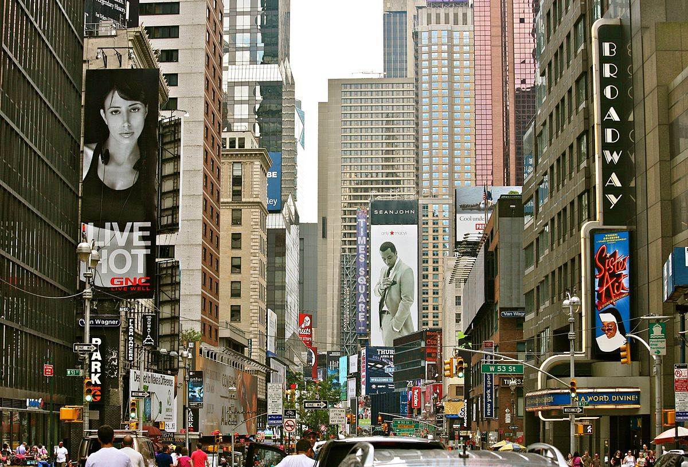
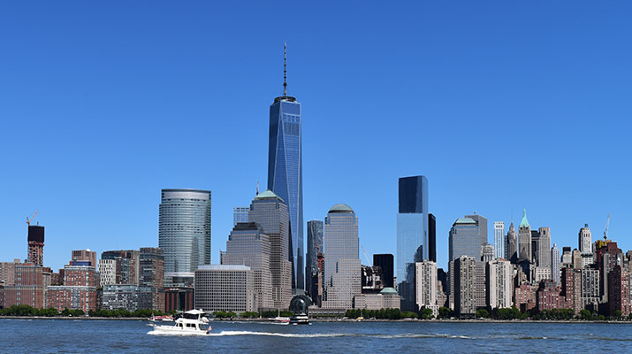

| Место | Название | Информация | |
|---|---|---|---|
 |
Статуя Свободы | Пожалуй, не только коренной американец, но и любой житель нашей планеты на вопрос, что является символом США, не задумываясь, ответит: статуя Свободы. | |
|  | Бродвей | Бродвей — одна из самых необычных улиц мира. В каком-то смысле ее основателями считаются индейцы-алгонкины, проложившие себе путь сквозь густые леса Манхэттена с юга на север острова, который преобразовался в «Широкую дорогу». | |
|  | Башня свободы | Башня свободны была возведена на месте бывших башен-близнецов, подвергшихся террористической атаке 11 сентября 2001 года. На данный момент это самое высокое здание в Нью-Йорке, его высота вместе со шпилем — 541м. Строительство началось в апреле 2006 года и закончилось 10 мая 2013 установкой шпиля. | |